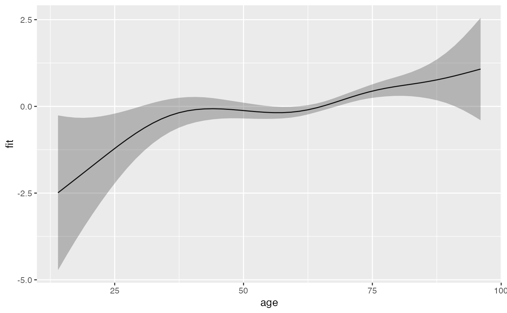
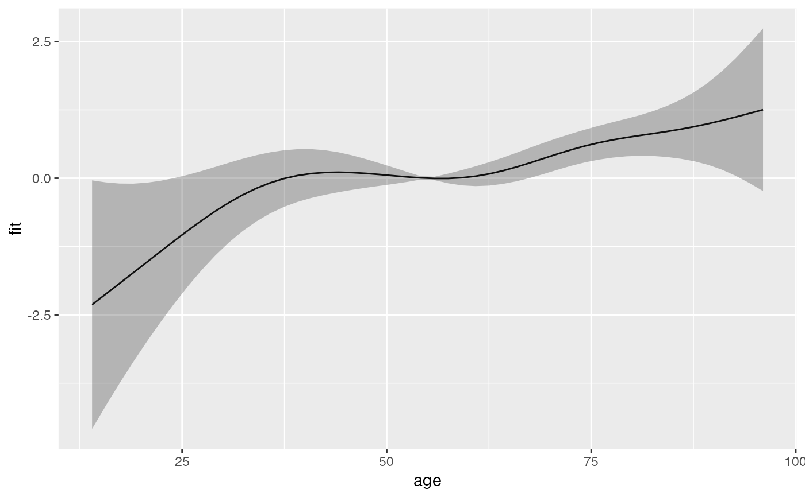

R/add-functions.R
add_term.RdAdds the contribution of a specific term to the
linear predictor to the data specified by newdata.
Essentially a wrapper to predict.gam, with type="terms".
Thus most arguments and their documentation below is from predict.gam.
add_term(newdata, object, term, reference = NULL, ci = TRUE, se_mult = 2, ...)
| newdata | A data frame or list containing the values of the model covariates at which predictions
are required. If this is not provided then predictions corresponding to the
original data are returned. If |
|---|---|
| object | a fitted |
| term | A character (vector) or regular expression indicating for which term(s) information should be extracted and added to data set. |
| reference | A data frame with number of rows equal to |
| ci |
|
| se_mult | The factor by which standard errors are multiplied to form confidence intervals. |
| ... | Further arguments passed to |
library(ggplot2) ped <- as_ped(tumor, Surv(days, status)~ age, cut = seq(0, 2000, by = 100)) pam <- mgcv::gam(ped_status ~ s(tend) + s(age), family = poisson(), offset = offset, data = ped) #term contribution for sequence of ages s_age <- ped %>% make_newdata(age = seq_range(age, 50)) %>% add_term(pam, term = "age") ggplot(s_age, aes(x = age, y = fit)) + geom_line() + geom_ribbon(aes(ymin = ci_lower, ymax = ci_upper), alpha = .3)  # term contribution relative to mean age s_age2 <- ped %>% make_newdata(age = seq_range(age, 50)) %>% add_term(pam, term = "age", reference = list(age = mean(.$age))) ggplot(s_age2, aes(x = age, y = fit)) + geom_line() + geom_ribbon(aes(ymin = ci_lower, ymax = ci_upper), alpha = .3) 